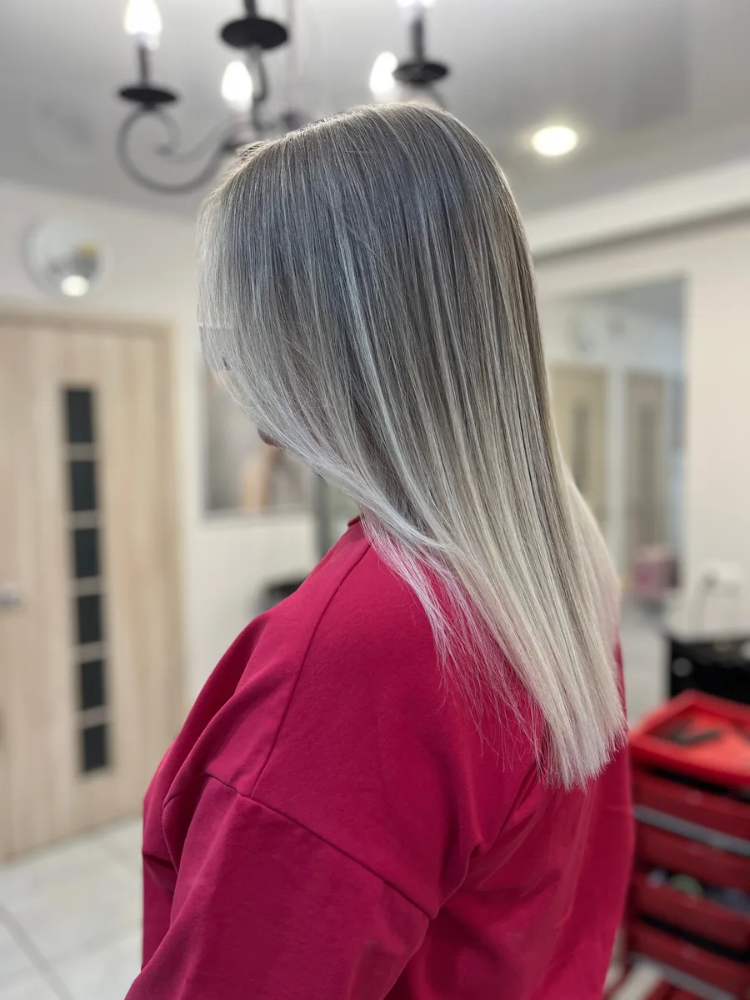
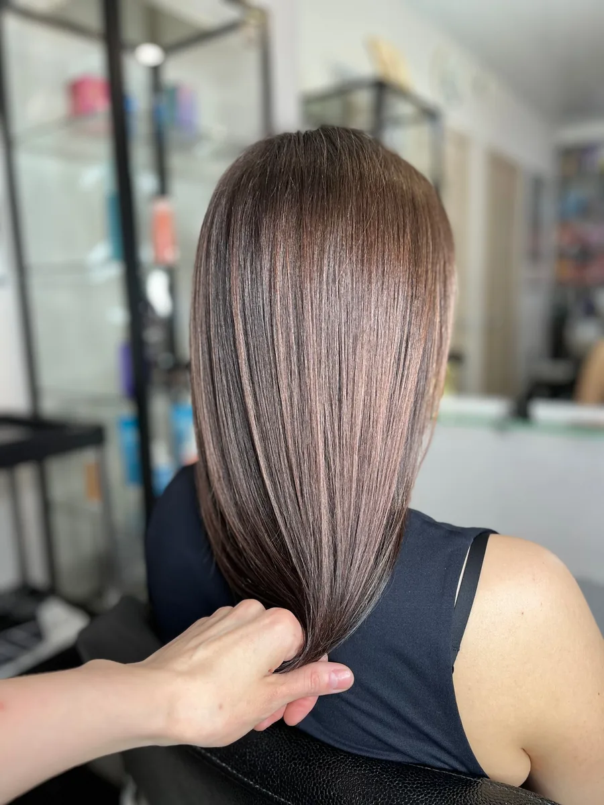
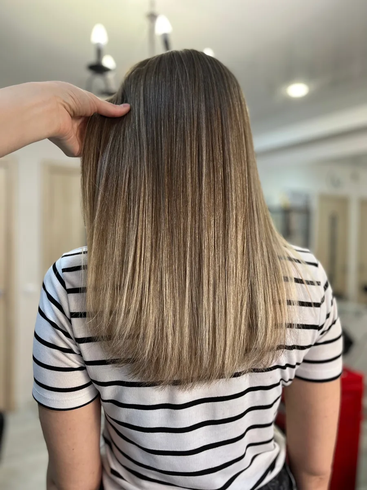
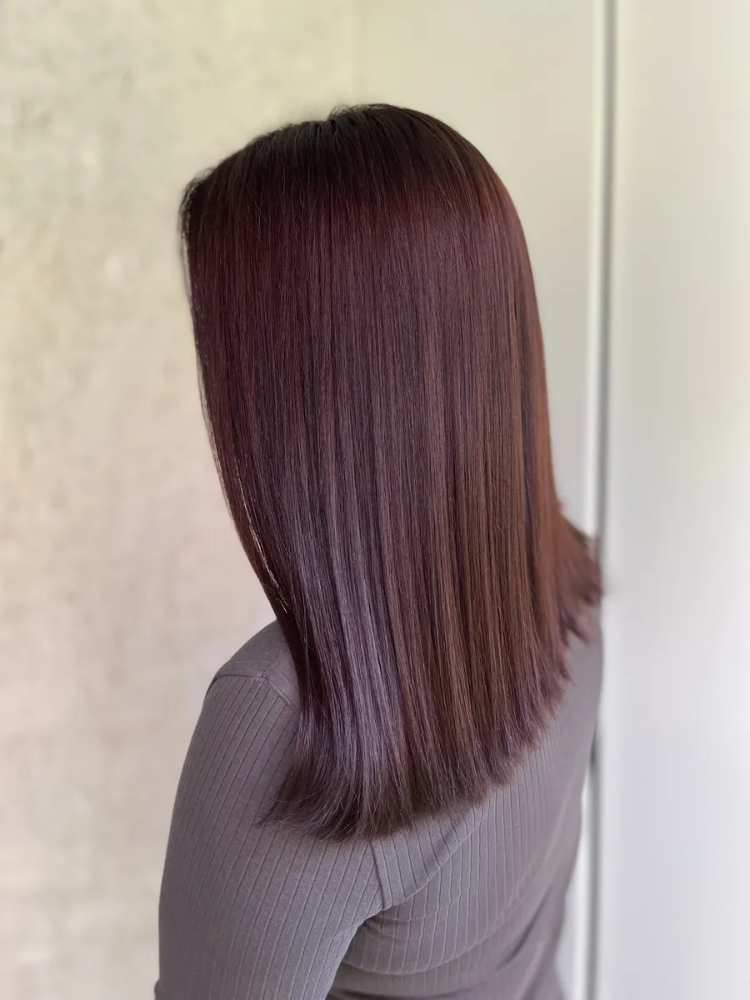
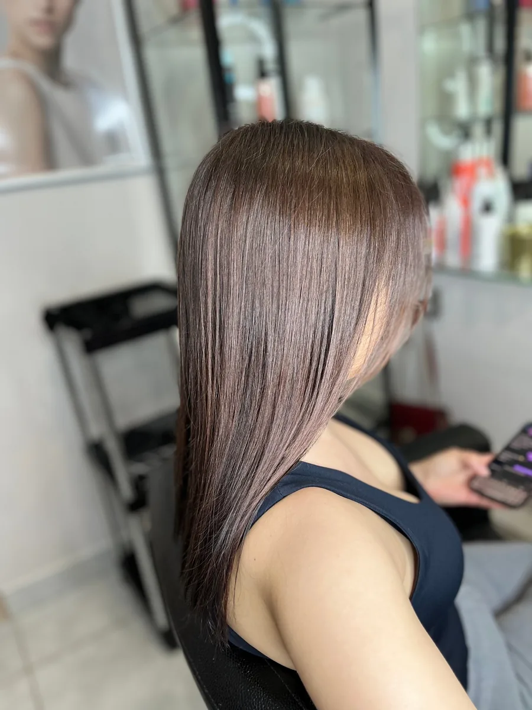
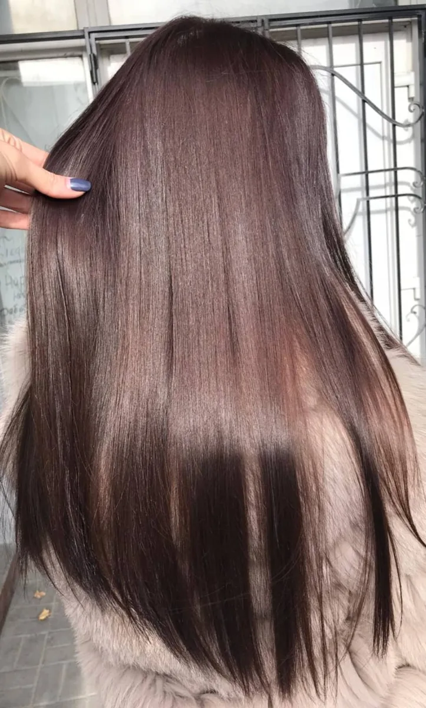
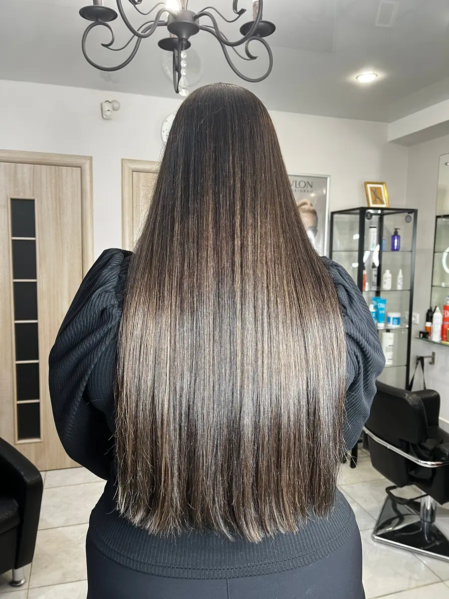
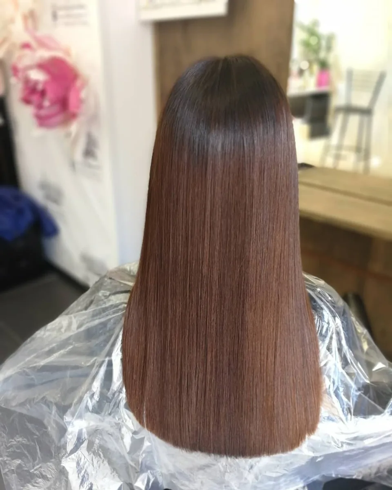

Волосы
Стрижки, укладки, окрашивание и уход. Колорист поможет подобрать цвет и исправить прежнее окрашивание.
Волосы, ногти и уход за лицом в одном салоне. Поможем сделать ваши волосы и ногти красивыми и ухоженными.








ОкрашиваниеЦвет и уход
«Красота и кофе» – небольшой салон в Нижнем Новгороде, на улице Белинского, 110. Здесь работают парикмахеры, колорист и мастера маникюра.
Мы подскажем, какая стрижка и какой цвет подойдут именно вам, и посоветуем косметику для домашнего ухода.
Оплатить визит можно картой.
Стрижки, укладки, окрашивание и уход. Колорист поможет подобрать цвет и исправить прежнее окрашивание.
Ухоженные руки и ноги: маникюр и педикюр.
Уход за лицом, брови, ресницы и макияж.
Подробнее об услугах и ценах расскажем по телефону.
Записаться по телефонуХотите порадовать близкого человека? Подарите сертификат в «Красоту и кофе» – пусть выберет то, что хочется ему.
Узнать о сертификате по телефонуДолго искала в городе подходящего мастера, перепробовала некоторое количество салонов - все не то. С декабря 2024 года стричь волнистые волосы хожу только к Сергею и вожу к нему же кудрявую дочь - мы обе очень довольны) Сергей грамотно продумывает форму стрижки и под тип завитка, и под тип лица - и с учетом хотелок заказчика. Поболтать во время процедур с ним тоже приятно)
Была у Сергея на укладке, очень понравилось, очень грамотный парикмахер, и к волосам относится бережно, и все пожелания учитывает, и пообщаться приятно)
Маленький салон. Оказываются услуги маникюра, педикюра, парикмахерские. Салон находится напротив ТЦ Этажи. Хорошие, доброжелательные специалисты. Возле салона можно припарковаться.
Моя мастер маникюра работает в этом салоне. Очень уютное место с классными мастерами)
Ждём вас на улице Белинского, 110, на первом этаже. От метро «Горьковская» – 1,76 км пешком.
| Пн–Вс | 09:00–20:00 |
|---|